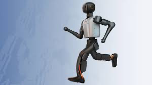

Humanoid · China · Leader · #1 R-Score rank
K1 Robot Profile
Humanoid locomotion research, embodied AI development and RoboCup competition
Robot Snapshot
Core commercial and technical signals for K1.
K1 facts
- Company
- Booster Robotics →
- Status
- Tracked
- Use case
- Humanoid locomotion research, embodied AI development and RoboCup competition
- Height
- Not disclosed
- Runtime
- Not disclosed
- Official source
- Open official source →
Robologai view
K1 is tracked as a Humanoid robot for Humanoid locomotion research, embodied AI development and RoboCup competition. Robologai scores it by maturity, deployment signal, price clarity, media proof, and official source strength.
100/100 Leader
Maturity 5/5
Price clarity 5/5
Commercial 100
Mobility 100
AI signal 100
Leader
Readiness Breakdown
How Robologai scores K1 across market-readiness signals.
Data Quality
Source confidence, pricing clarity, and deployment proof.
Source Notes
K1 source trail.
Deployment Context
What K1 signals about the physical AI market.
Compare Next